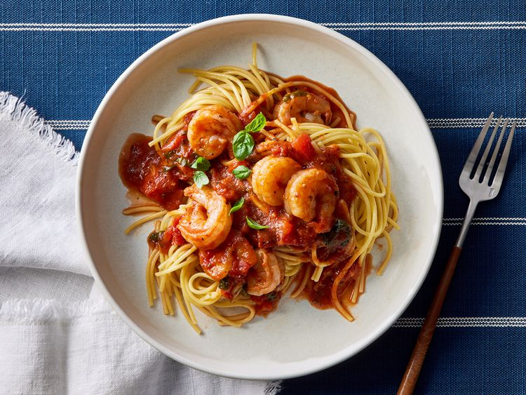

Shrimp Marinara

Easy marina Pasta with Shrimp
Shrimp marinara hits all the right spots - tasty shrimp with homemade tomato
sauce served over spaghetti. A quick and easy weeknight meal.This easy shrimp
marinara is the epitome of easy yet elegant cooking. The recipe is no fuss but
punches way above weight for the average 30 minute meal, thanks to tender
shrimp and the most delicious homemade marinara sauce. I could eat this again
and again without complaint.
Shrimp marina Ingredients
- Pasta: This shrimp marinara recipe starts with dry spaghetti noodles.
- Oil: Cook the shrimp in extra-virgin olive oil.
- Shrimp: You'll need a pound of peeled and deveined shrimp.
- Seasonings: This dish is seasoned with fresh garlic, crushed red pepper, fresh
basil, dried oregano, and kosher salt.
- Canned tomatoes: The marinara sauce calls for canned fire-roasted tomatoes and canned tomato sauce.
- Balsamic vinegar: Add bold flavor and brightness with a tablespoon of balsamic vinegar.
How to make Shrimp Marinara
- Make the spaghetti.
- Cook the shrimp and transfer to a plate.
- Cook the garlic and red pepper to the skillet and cook until fragrant.
- Stir in the remaining ingredients and bring to a boil, then simmer until thickened.
- Return the shrimp to the skillet and cook until heated through.
- Serve over spaghetti and garnish with fresh basil.